Menu du jour
CHF 19.– à 22.–Une entrée et un plat principal, sur place. Un menu différent chaque semaine. Deuxième entrée possible pour CHF 4.–.
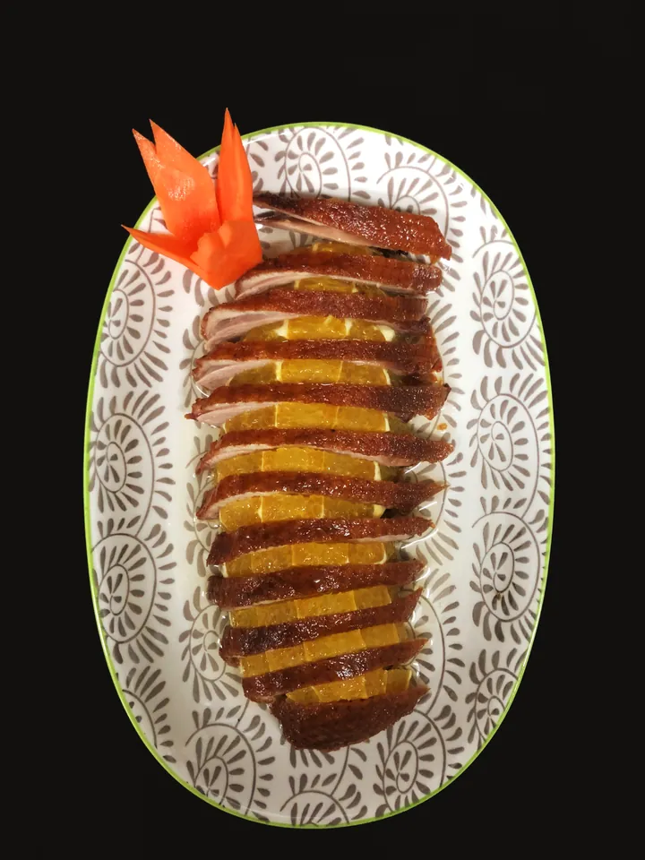
Restaurant asiatique · Le Mont-sur-Lausanne
Toutes les saveurs de l'Asie dans notre restaurant au Mont‑sur‑Lausanne.
Canard à l'orange · cuisse de canard rôtie, sauce à l'orange
Notre maison
Le restaurant Xin Yuan a été créé pour vous faire découvrir la cuisine asiatique : les grands classiques de la cuisine chinoise et asiatique, servis dans une ambiance conviviale et chaleureuse.
Canard laqué cantonais, plats sautés au wok, currys rouges et verts thaïs, et une carte de spécialités vietnamiennes : bœuf, poulet ou agneau grillés avec nouilles de riz, riz en bambou.
Du lundi au vendredi à midi, sur place : une entrée et un plat principal, avec un menu différent chaque semaine.
Bœuf, poulet, crevettes, canard, agneau, calamars ou poisson, et toutes sortes de plats végétariens à base de tofu. Une carte à emporter, à commander par téléphone.
À la carte
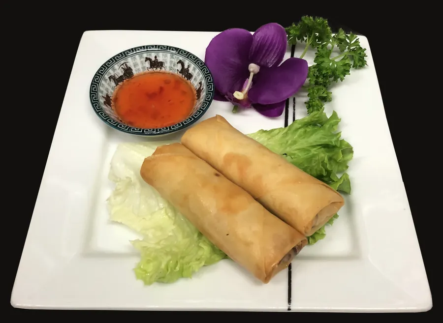
Légumes, pâte de blé
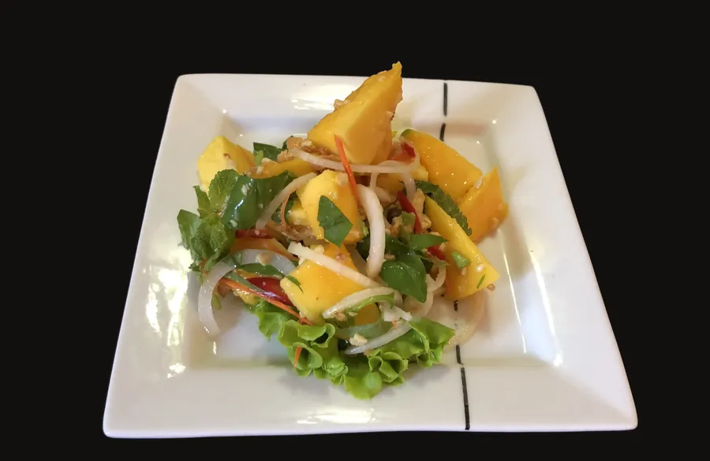
Basilic, sauce de salade vietnamienne
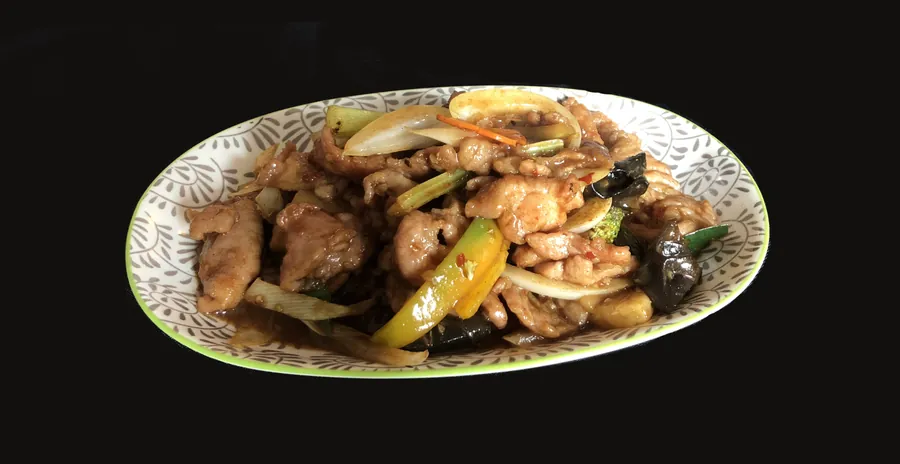
Aussi au bœuf
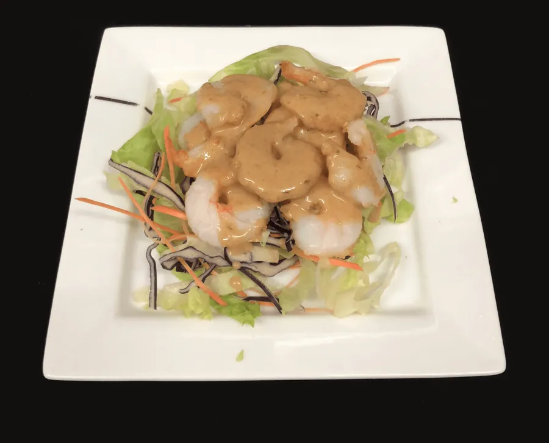
Salade verte, crevettes
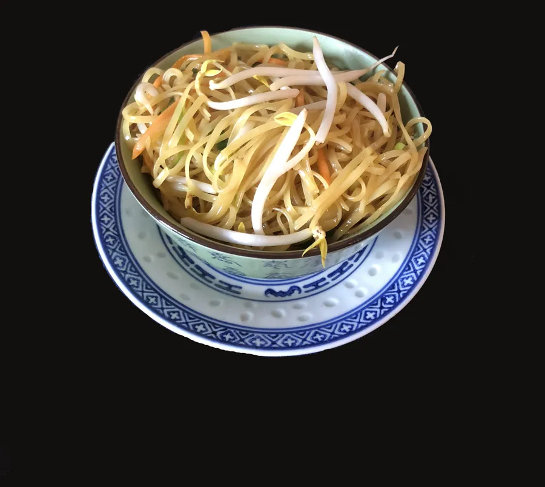
Nouilles de blé dur, légumes
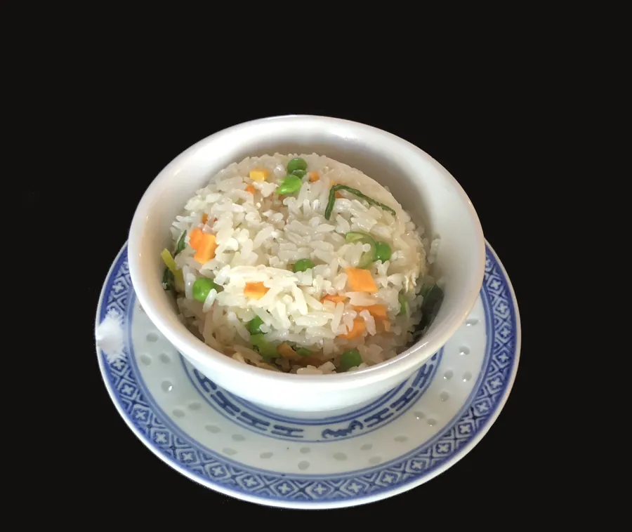
En accompagnement
Midi et soir
Le menu du jour pour la pause de midi, et trois spécialités à partager dès deux personnes.
Une entrée et un plat principal, sur place. Un menu différent chaque semaine. Deuxième entrée possible pour CHF 4.–.
Potage aigre-piquant, canard laqué cantonais avec des crêpes, canard sauté aux germes de mungo, canard sauté au wok, accompagnement au choix et une boule de glace.
Bouillon épicé ou noix de coco, au choix. Dans le plateau : bœuf, porc, crevettes, moules, choux chinois, tofu. Une entrée à choisir parmi potage aigre-piquant, rouleaux de printemps ou raviolis frits au porc.
Deux entrées à choix, un plat principal de votre choix avec riz parfumé, riz cantonais ou nouilles sautées aux légumes, et une boule de glace en dessert.
Allergie à la farine de riz, à la fécule, aux arachides, au sésame, à l'huile d'arachide ou à la sauce d'huîtres : merci d'en informer le serveur à l'avance.
En salle
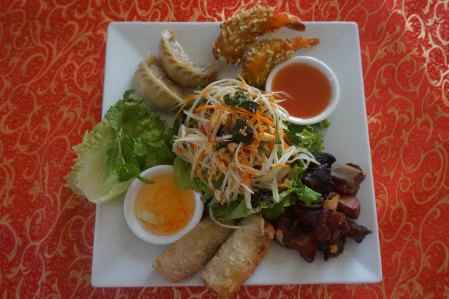
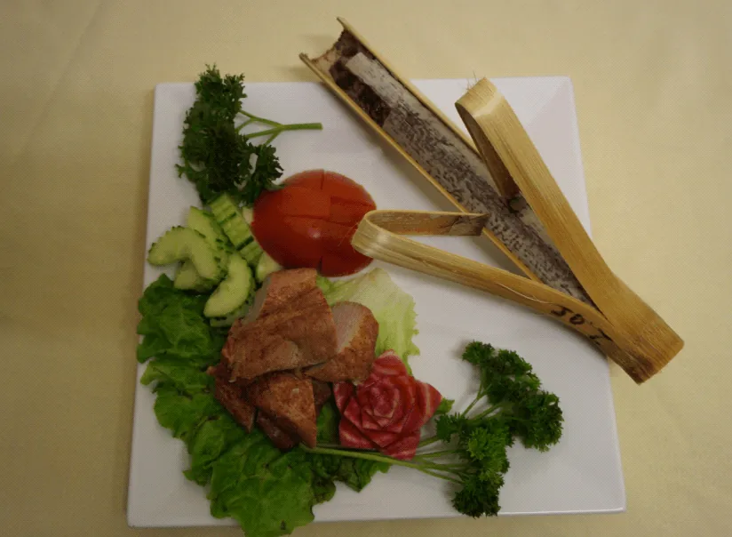
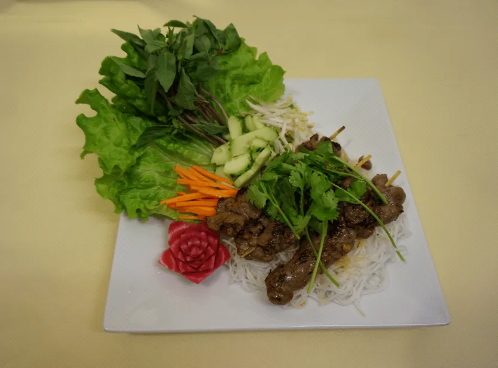
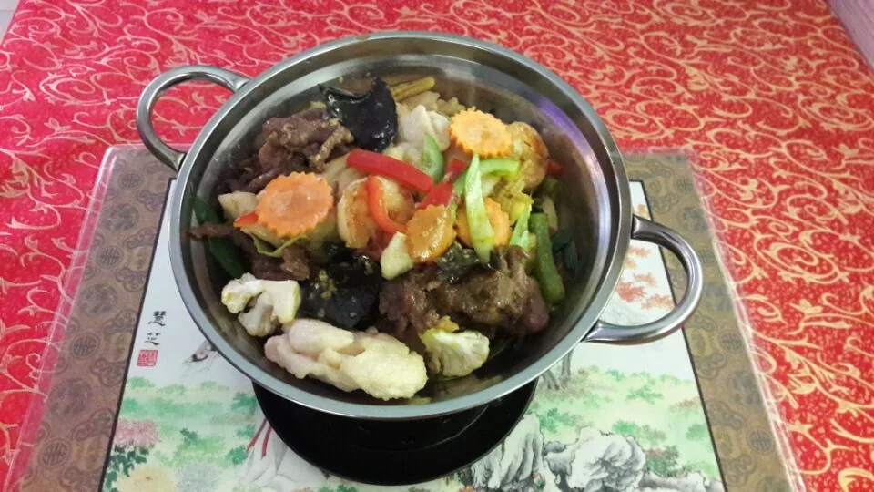
Ils parlent de nous
« Repas succulent, serveurs très gentils. Bel endroit pour manger en famille ou entre amis. J'y suis allée plusieurs fois et j'y retournerai encore ! »Nadia R.
« C'est beau, accueillant, rénové, propre, avec une belle terrasse ombragée et surtout tout a été un vrai délice. Le service était au top ! »Sandra M.
Venir chez nous
Pour réserver une table ou commander à l'emporter. Les commandes passent aussi par eat.ch.
| Lundi | 11:00 – 14:3017:30 – 22:00 |
|---|---|
| Mardi | Fermé le midi17:30 – 22:00 |
| Mercredi à dimanche | 11:00 – 14:3017:30 – 22:00 |